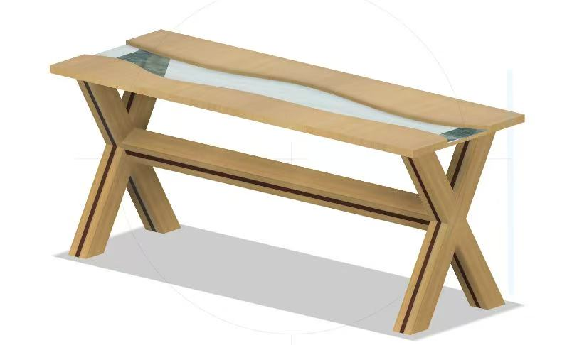
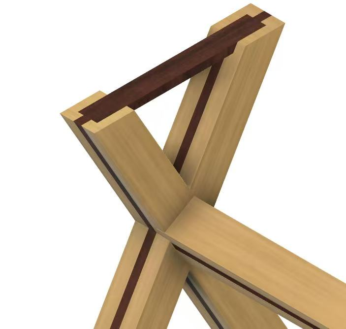
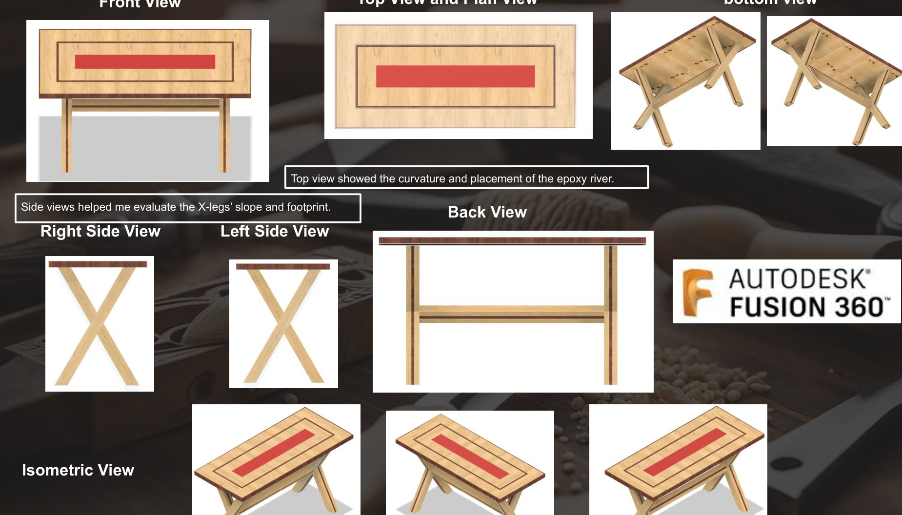

← ALL PROJECTS
CASE STUDY 02 / 2025
INDUSTRIAL TECHNOLOGY (TIMBER) · HSC MAJOR WORK
Epoxy Resin
Epoxy Resin
River Table.
A custom table exploring how joinery, material contrast and structural form can become one finished object.

02 / FINAL OUTCOME
DETAILS FROM THE ORIGINAL 40-PAGE HSC FOLIO
~1820 × 780 mm
TABLETOP DESIGN DRAWING
45° mitres
LAYERED TASMANIAN OAK FRAME
Blue Gum
DARK LAMINATIONS & RED-DYED INSET
Red epoxy
FINISHED RECTANGULAR CENTRE
The HSC folio documents a design change from a complex early support to an achievable X-leg scheme. Its production diary records joint alignment and resin curing issues, followed by workshop refinements. This V6 model now follows the layered built tabletop instead of V5's incorrect live-edge slab interpretation.
INTERACTIVE
/ OBJECT EXPLORER
Drag to rotate · Scroll or pinch to zoom · Select a feature
V7 / FOLIO-BASED INTERACTIVE RECONSTRUCTION
Explore every connection.
The complete HSC Timber folio now guides the layered mitred tabletop, Blue Gum inlays, red resin centre, laminated X-frames and cross-lap connections. Rebuild it piece by piece.
3D / INTERACTIVE STUDY
Explore the project in 3D
A lightweight 3D interpretation based on original project photographs. Not the original Fusion 360 file or a measured engineering drawing.
3D graphics are unavailable in this browser. The original project photograph is shown instead.
BUILD LAB ·
0/5
SELECTED DETAIL
01 / INTRODUCTION
Timber and resin
A red central resin feature is visible in the completed table, between timber sections. The blue option is a design study, not a photograph of the final build.
Controls: arrow keys rotate, + / − zoom; in assembly mode select a labelled part and choose Snap selected, or drag it into place. Undo reverses the last assembly action.
An interpretive 3D reconstruction grounded in Dennis Tan’s 2025 HSC folio, drawings and construction photos. Part placement uses simplified grouping and snap positions. Not exact Fusion 360 geometry, build instructions, or a certified model.
BUILD IT YOURSELF · INTERACTIVE 3D
Assembly workshop
Move components by dragging. Release close to the outlined target for magnetic snap. Select another part to continue.
Tip: select a part, then drag directly in the 3D scene. Use Orbit camera to change your view. Keyboard users can select a component and choose Snap selected. Assembly is illustrative, not a construction instruction.
ORIGINAL DESIGN REFERENCES
Reference renders supplied by Dennis Tan, used to guide the refined 3D interpretation. They remain distinct from the interactive reconstruction.





Source: Dennis Tan, Industrial Technology (Timber) Design & Management Folio, 2025. Drawing dimensions (approximately 1820 × 780 mm) describe the design study, not a certified as-built survey.
Built evidence first. Use the model to explore form, then compare it with the original workshop photographs and design-stage CAD images below.
01
/ THE PROJECT
Form meets
Form meets
fabrication.
The Epoxy Resin River Table was my 2025 Industrial Technology (Timber) major work. It explored a strong, geometric timber base combined with a long, contrasting resin centre feature in the tabletop.
The project is supported by original CAD renderings, close-up joinery views, fabrication photographs and a final assembled table. These materials document how a digital design was developed through practical construction stages.
The final red resin and layered rectangular timber surround are reflected in the updated reconstruction. Earlier pale-blue renderings remain in the design history below as initial studies.
02
/ DIGITAL TO BUILT
Explore the latest folio-informed 3D model beside the real completed piece.
INTERACTIVE DESIGN COMPARISON
From model
From model
to
material.
Compare the latest nested timber tabletop, red resin centre and X-frame geometry with the real workshop outcome. The model is an interpretation of the folio, not a precision scan.

A consistent X-frame
Both model and photograph show two crossed leg supports and a connecting stretcher, with some detail differences between model and fabrication.
Layered timber and red resin
The updated interpretation now includes the multi-layer rectangular surround and red central feature documented in the original HSC folio.
Compare model with evidence
Use the real photographs and original engineering drawing to evaluate the model. The interactive geometry remains an approximation, not verified as-built CAD.
02
/ DIGITAL DESIGN
Concept modelling helped explore the table's form and structural geometry before physical making.
On screen.
In the workshop.
DESIGN EVOLUTION / DOCUMENTED
Earlier idea. Later resolution.
The original CAD image explored a pale-blue flowing resin channel. The latest reconstructed model reflects the later red, rectangular inset with layered timber borders evidenced in the HSC design folio and built table. They represent different design stages, not interchangeable renderings.
03
/ JOINTS & STRUCTURE
Geometry looks clean in a render; the workshop reveals how precisely the pieces must connect.
The making of
an X-frame.
THE STRUCTURAL IDEA
Crossed members.
Crossed members.
Clear connections.
The X-shaped supports use angled timber members and dark contrasting accents. Construction photographs reveal how the geometry meets at the central intersection and connects to a horizontal brace.
Joinery detail matters because an attractive form must also be assembled accurately. The close-ups document marking, shaping and fit at those intersections.
Cutting
Joint fit
Assembly
Alignment
04
/ TABLETOP FABRICATION
Working with material contrast and a long central feature.
A detail that
defines the piece.
The tabletop uses a rectangular perimeter with long timber sections surrounding a central resin feature. Workshop images document shaping and surface preparation, followed by the resin section visible in the later construction and finished photographs.
The early blue river study and later red inset demonstrate a design progression. The finished photographs, folio drawings and current 3D reconstruction are labelled separately.
06
/ FABRICATION EVIDENCE
Visible design decisions connecting the render, joint details and completed table.
Details that
hold together.
The strongest part of this project is the documentation of how the modelled idea became real timber parts. Its images show both clean concept geometry and the messier, practical work of fabrication.
SEE THE JOINT DETAILSCrossed timber supports
A repeated X-form gives the base a distinctive structural silhouette.
Joint refinement
Workshop close-ups show the physical interfaces where diagonal members meet.
Contrasting resin centre
The finished red resin element visually differs from the original light CAD concept.
05
/ REFLECTION
Precision turns
Precision turns
ideas real.
This project brought together 3D visualisation, timber fabrication and surface detailing. The step from modelling to assembly highlighted why measurements, accurate joint fit and an organised fabrication sequence matter.
It also made clear that digital models are a starting point. Actual materials, physical connections and the finished appearance require observation and refinement in the workshop.
Explore the mobile shelter ↗